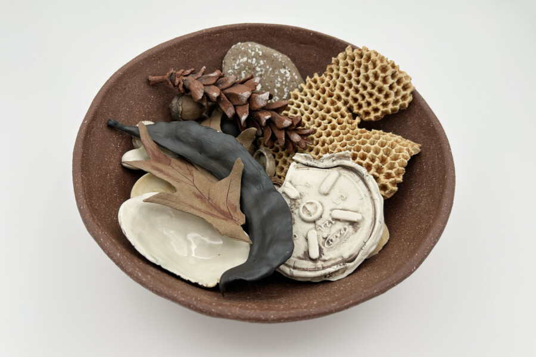

Dawn Holder: What We Gatherd
The Art & Design Department of South Suburban College is pleased to announce What We Gathered, an exhibition of mixed-media sculptures by Indianapolis-based artist Dawn Holder, on display now in the Sculpture & New Media Gallery through April 16, 2026.
Dawn Holder is a sculptor, installation artist, and Professor of Studio Art in the Herron School of Art + Design, where she also serves as the Graduate Director of the MFA in Visual Art. She holds an MFA in Ceramics from the Rhode Island School of Design and a BFA in Ceramics from the University of Georgia. Holder is the recipient of numerous awards and grants and has shown her work in galleries and museums internationally.
Holders’ work investigates various elements of landscape and their socio-cultural significance through ceramics, photography, and mixed media. She combines diverse influences, such as Minimalism, Eco-Feminism, the Necropastoral, and aerial photography, to create densely detailed work that is both visually striking and physically vulnerable.
“What We Gathered begins in the landscapes where I wander—forests, riverbanks, neighborhood streets, and urban parks—where feathers, bottle caps, fossils, seeds, and bits of glass and plastic surface like quiet offerings. I gather what the land reveals: remnants of prior inhabitants, the debris of our modern presence, and the living traces of insects, birds, plants, and animals that navigate these shifting ecosystems.”
A reception will be held in the gallery on Tuesday, March 31, from 11 a.m. – 12:30 p.m.
The Sculpture and New Media Gallery is open Monday – Thursday, 9 a.m. – 4 p.m. The galleries are closed on weekends and holidays.
Image:
Remnants of Our Time II (2026)